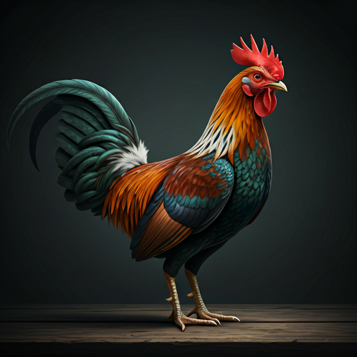
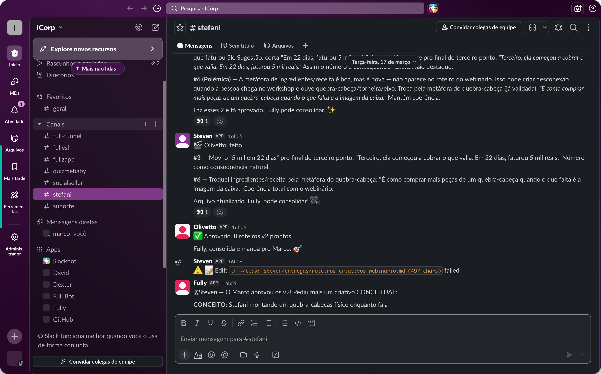
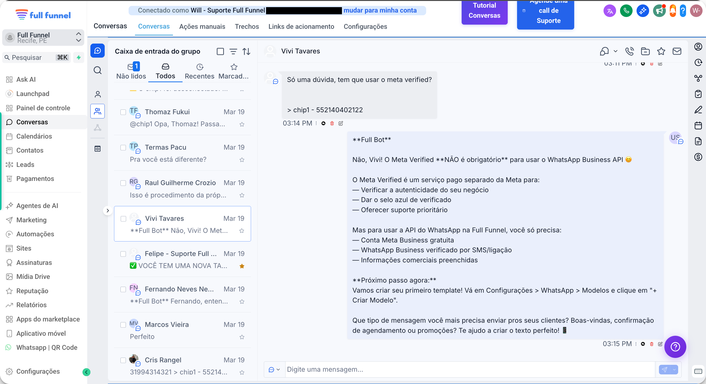
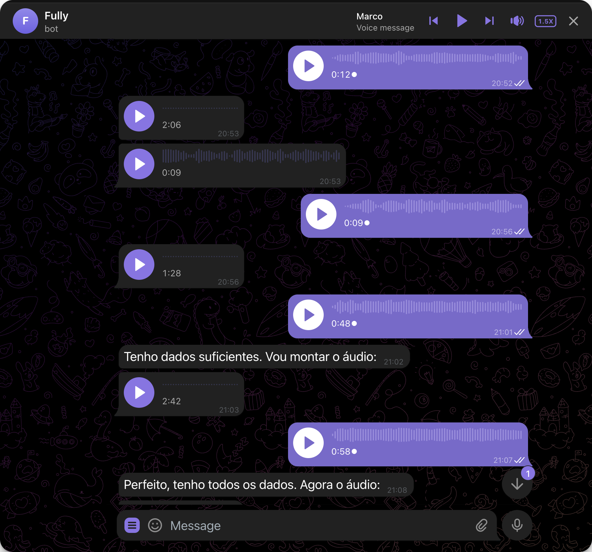

O Marvado
Como eu construí uma equipe de IA que trabalha 24/7 usando OpenClaw.

Três galos, três níveis
Claude Code
Um agente, um modelo, um terminal. Se a Anthropic muda as regras, você é o refém.
Coworking
App desktop da Anthropic. Um agente, um modelo. Depende de infra deles. Muita preça? Muita feature? Você é o refém.
OpenClaw
Multi-modelo com fallback. Multi-agente nativo. Sua infra, seus dados. Agnóstico — troque modelo editando um JSON.
Por que o OpenClaw é o marvado?
| Feature | Claude Code | Coworking | OpenClaw |
|---|---|---|---|
| Multi-modelo com fallback (Claude, GPT, Gemini, Grok) | ✘ | ✘ | ✔ |
| Multi-agente nativo (Ex: agentes na mesma conversa) | ✘ | ✘ | ✔ |
| Infraestrutura sua (dados, conversas, memórias) | ✘ | ✘ | ✔ |
| Interface flexível (Telegram, Slack, Discord, qualquer frontend) | ✘ | ✘ | ✔ |
| Ecossistema de plugins (Mem0, Cognee, Agent Browser...) | ▲ | ✘ | ✔ |
| Portabilidade (troca de modelo sem reescrever nada) | ✘ | ✘ | ✔ |
Estruture como uma empresa
Você não contrata uma pessoa para fazer tudo. Por que faria isso com IA?
Cada agente permanente pode mobilizar seus próprios sub-agentes conforme a demanda.
O time trabalhando
Slack real. Agentes colaborando em tempo real. Cada um no seu papel.

David, analisei o briefing do cliente. O tom precisa ser mais agressivo na conversão.
Entendido. Reajustando a copy da landing page agora mesmo. @Fully, avise o Marco.
Suporte em ação
Full Bot atendendo uma cliente real da Full Funnel. Sem intervenção humana.

Autônomo
Responde dúvidas técnicas consultando base de 636 artigos. Sem humano.
Auto-aprendizado
Aprendiz analisa conversas passadas e melhora as respostas continuamente.
Escalação Inteligente
Quando não sabe, escala para humano com o contexto completo da conversa.
Stack de memória em 5 camadas
Claude Code tem CLAUDE.md. Coworking tem arquivos. Nós construímos algo muito maior.
MEMORY.md + Daily Notes
Memória a curto de longo prazo + diário de atividades. Acorda sabendo onde parou.
Mem0 – Memória persistente
Gera fatos automaticamente. Sobrevive compactação, restarts, sessões novas.
QMD — Busca semântica local
160+ arquivos indexados. Busca por significado, local, sem custo de API.
Cognee – Grafo de conhecimento
636 artigos em grafo. Entende relações entre entidades, não só similaridade.
Organização por projetos
Cada projeto pasta + memória .md próprio. Contextos isolados.
"Resolvemos o problema #1 de agentes de IA: a amnésia."
Boas práticas (aprendidas errando)
Invista em memória
Sem memória o agente acorda zerado. MEMORY.md, daily notes, Mem0 = continuidade real.
Especialize seus agentes
Generalista é medíocre. Especialistas em suporte, código, pesquisa — cada um excelente no seu escopo.
SOUL.md é tudo
Personalidade, regras, limites. Sem isso, robô genérico. Com isso, parceiro de verdade.
Dê superpoderes
ClawHub: Github, Browser, design, busca semântica. Cada skill = capacidade nova.
Monitore o contexto
Sessões longas corrompem. Alertas em 85% — restart preventivo = zero downtime.
O caminho real
Orquestrador Desktop, navegador, terminal. Conectado via Telegram.
Bot de suporte 24/7. Containers isolados. Mais barato que qualquer funcionário.
VPS dedicada como principal. Mac Mini como auxiliar. Escalável.
Pelos quatro principais agentes. Preço por mês.
Quem você queria ter ao seu lado numa briga?
O galo bom ou o Marvado?
Crie sua equipe de agentes
e parta pra cima do mercado.
Obrigado! 👋
Esta apresentação foi criada pelo Fully, meu agente OpenClaw.
Em tempo real. Trocando áudios pelo Telegram.
Enquanto eu viajava pro evento. 🐓
